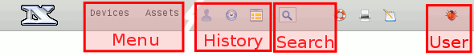
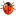

-
-


The NeDi GUI
NeDi features a modular GUI, which can easily be customized. Have a look at lines beginning with "module" in nedi.conf.
The Section equates to the top menu and Module to the menu entry. It links to Section-Module.php and uses the icon specified in
the 3rd column. The group determines which users are allowed to see/use that particular module (more details here).

- Each module persists of a header row and a main input form. A larger version of the menu icon always shows up to the left and a click on it resets the module to its defaults. If you hover over it, the exact module name is revealed (shown in the footer as well)
- If "List optimize" is selected (next to
 in User-Profile), a history is shown next to the menu
in User-Profile), a history is shown next to the menu
- Use the "Find IT" search field in the header, to get quick results on any text, IP or MAC address
- The print icon in the header opens a printable view of the current module (usually without the main input form). On most lists you can click on the rows to highlight them
- You can save the state of most modules to a bookmark or use the notepad icon
 in the header to add a link to the admin message in User-Profile (look for "EDIT" on the bottom and change accordingly)
in the header to add a link to the admin message in User-Profile (look for "EDIT" on the bottom and change accordingly)
- Text links usually lead to applying a filter within the current form
- Numbers after a bar-image (e.g. # of device types) take you to the corresponding list module
- Used SQL queries can be shown by clicking on the debug icon  (only shown for admin). It executes the query in Other-Export for quick analysis
- Regular users see
 and those having a view filter applied get instead. Hovering over it reveals the username and current server time
and those having a view filter applied get instead. Hovering over it reveals the username and current server time
 NeDi Help
NeDi Help